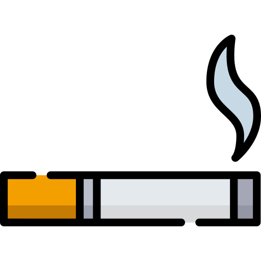

OBESITY IS LINKED TO |
 | ||
| smoking | poverty | drinking |
increasing the risk of more than 20 percentable diseases including sleep ,asthma, heart diseases, type 2 diabetes, osteoarthmetis,high blood pressure and high cholestrol stroke.
Children in their teens who are obese and who have triglyceride levels have arteries similar to those of 45 years old
Obese children as young as age 3 show indicators for developing heart diseases later in life.
Children who are overweight from the ages of 7 to 13 may develop heart diseases as early as age 25.
Obese childrens are twice as likely to die before age 55 than slimmer peers
(which may lack important fibre found in whole fruits)makes up40%of children's daily friut intake.
Fewer school absences Higher academic acheivement Higher self esteem Fewer behavioral problems